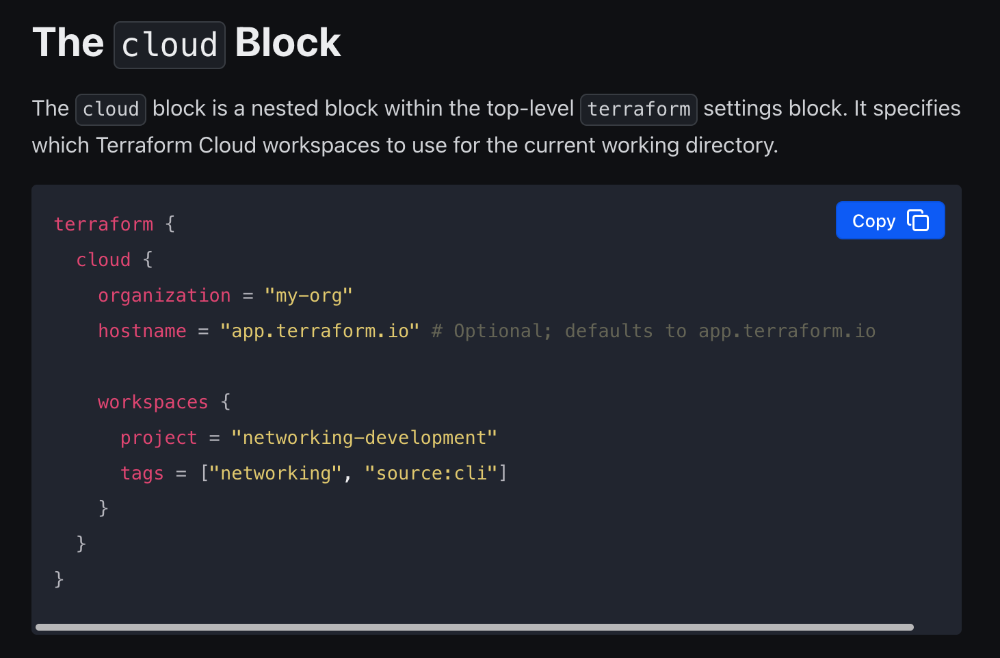

HashiCorp is a unicorn DevOps company that specializes in world class infrastructure products. They are the industry standard in Infrastructure as Code (IaC), and have produced many key products such as Terraform, Vault and Consul.
In 2023 I rejoined HashiCorp as a product designer focusing on Product Led Growth and the CLI experience on Terraform. Terraform is the industry standard tool to provision cloud-agnostic infrastructure as code. This allows you to use a declarative language to manage dynamic loads, and spin up new servers rapidly.
Overview
When: Q2 2024
Team: Product Designer (Me),
Product Manager, Eng Lead, EM
Tools: Figma, Snowflake, Commandbar
Background
Terraform Cloud has the concept of “Tags” within the product, and also as an object type within a code block. Tags were introduced to allow users to quickly organize, correlate and filter the core resource of Terraform Cloud, Workspaces.

Problem
Tags as a concept is ineffective in allowing customers to perform more administrative tasks, such as managing billing, audit, and RBAC. The current implementation is too permissive, meaning anyone can add or remove tags, and a tag itself cannot be added at a project level. This causes the customer to have to more manual busy work on their end to maintain a system of record of internal metadata to keep up.
Business case
Without an ability to have a more effective tagging system, customers are hesitant to use all of their contract entitlements due to the stringent nature of their internal cost tracking guidelines.
Outcomes
+63%
Adoption Rate
+21%
Net New Tags
-14%
Use of legacy Tags
Solution preview
A video preview of where we landed.
Detailed Case Study
Background
Terraform Cloud has the concept of “Tags” within the product, and also as an object type within a code block. Tags were introduced to allow users to quickly organize, correlate and filter the core resource of Terraform Cloud, Workspaces.
General Brief
Customers are finding tags useful, but incomplete, find a way to improve it.
Supporting Qualitative Research
To start out, the team and I had to figure out where exactly tags as a concept was falling short. These conversations helped set the foundation for understanding what the user problem is. It also yielded two main insightful pieces of feedback.
Supporting Quantitative Research
The first thing I did after hearing about customer painpoints was to venture into Snowflake and understand how tags are being used today. Tags, in its current implementation, are by nature fairly permissive in how you can use them.
A quick gander through the current tags found something interesting.
36% of users are currently already using a “key:value” notation their tags, validating the need for this to be supported more natively.
Problem
Tags as a concept is ineffective in allowing customers to perform more administrative tasks, such as managing billing, audit, and RBAC. The current implementation is too permissive, meaning anyone can add or remove tags, and a tag itself cannot be added at a project level. This causes the customer to have to more manual busy work on their end to maintain a system of record of internal metadata to keep up.
Design Goal
Customers require more granular tagging mechanisms on their projects and workspaces to correlate, organize and label their resources. Key:Value tags would allow customers to be able to place higher level tags onto their resources, enhancing visibility into key areas such as chargeback, team management, and auditing.
Constraints
One core constraint is that the “older” tags style still had to live on within the product, and couldn’t be deprecated, as this had larger implications on how customers use tags for compliance. Due to this, we had to juggle the previous implementation of tags with the new one, and navigate the complexity that a new feature would introduce to a user’s mental model.
Pattern identification
Tags is a very common pattern, so one thing that I had to navigate was understanding how other dev tools and DevOps services are using the concept. I had to make sure that the verbiage and concept aligned with higher level services, like cloud providers.
Key Insight:
There are usually two types of tags, value-only labels, and key value tags. Binding tags are separate from the creation of tags.